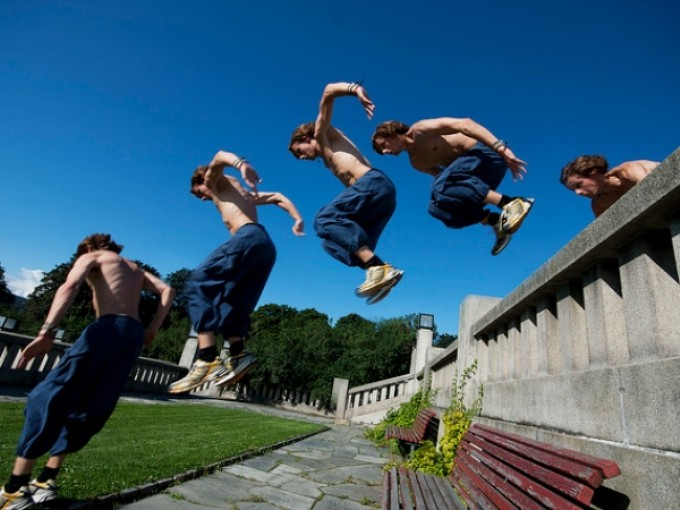

El parkour es la esencia de nuestra filosofía, en ella aprenderás como saltar obstáculos, balancearte, girar y controlar tu cuerpo para poder llegar de un lugar a otro sin que nada te detenga.
El precio promedio de una clase de parkour es de $141. Varía según diferentes factores : La experiencia del profesor de parkour. Lugar donde se de la clase (en línea o a domicilio) y la situación geográfica.
Debes correr al menos 11-16 km por semana. Correr es una parte primordial del parkour y debes ser capaz de correr grandes distancias, así como de esprintar. Otros ejercicios cardiopulmonares que te ayudarán son el lacrosse, el boxeo y la natación. El yoga también tonificará tus músculos.
